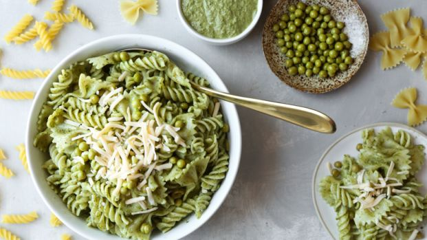
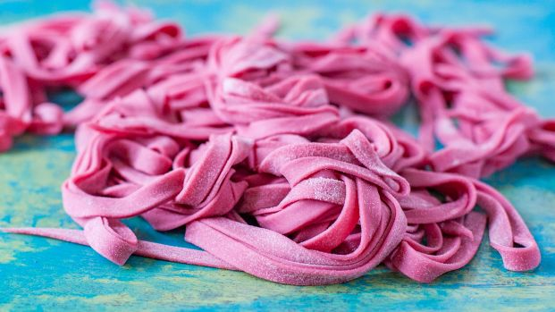

Fresh Herbs
Cooking with herbs can be a transcendental experience, and spring is the best time to take advantage of these flavor bombs. Be sure to enjoy cilantro, chives and mint, all of which flourish with receding winter frosts.
Peas
Spring is the best time to enjoy fresh, tender peas. When they are plump, round and full of spring rain, they'll work double time in all your favorite meals.
Beets
Beets are for more than borscht, as shown by this line-up. Just be sure you're selecting firm, blemish-free globes and not tossing the greens — you can work wonders with earthy beet greens.